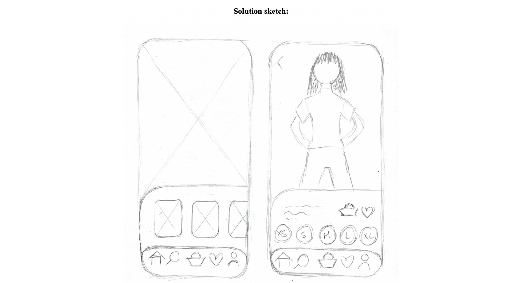
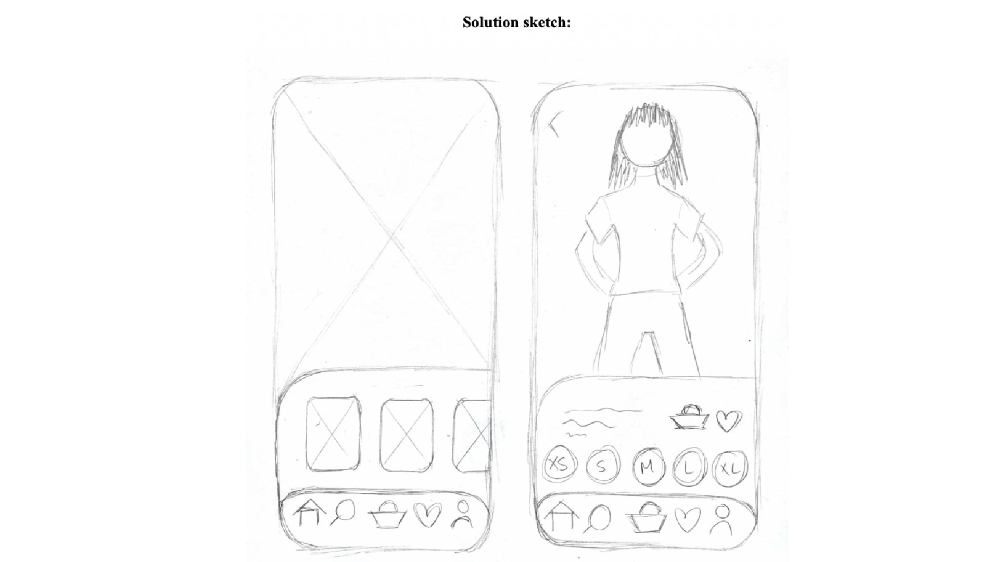

Ide
03.01.05 idé
I denne opgave skulle jeg på baggrund af min research, behandlingen af den samt de indsigter jeg kom frem til, lave de indledende tanker til et udkast af en ide til min egen unikke T-shirt webshop. Min problemstilling, mit emne for shoppen og databehandling fik jeg fastlagt gennem opgaven ‘Fra UX-Research til Idé”.
Gennem “Lightning Demos”-opgaven fik jeg samlet en liste med 3 hjemmesider og produkter jeg mente kunne være inspirerende for min webshop. Her inkluderede jeg Zalando, da jeg gennem min databehandling fra den tidligere opgave kunne se, at de adspurgte i høj grad foretrak Zalando som online weshop, efterfulgt af Asos, som jeg også valgte at inkludere i listen. Det sidste link viser et UI design pattern for en fitness app, som jeg fandt inspirerende.
Til slut tegnede jeg en masse skitser i “Sketch”-opgaven, hvor jeg blandt andet lavede en “Ideas”-sketch. Her skitserede jeg en masse ideer på baggrund af min ide til webshoppen, og udvalgte én, som jeg arbejde videre med i “crazy 8s”-sketchen. Her foldede jeg et papir i 8, og tegnede 8 versioner af samme ide som jeg udvalgte i den tidligere sketch opgave. Her havde jeg kun 1 minut til at tegne hver ide, deraf navnet “crazy 8’s”. Til slut skitserede jeg en “Solution sketch”, hvor jeg lavede min udvalgte ide endnu mere konkret og skitserede den færdigt.
 
